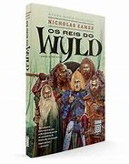

Os Reis do Wyld
No primeiro livro de Nicholas Eames, Os Reis do Wyld faz um interessante paralelo entre a fama de astros de rock e mercenários em um mundo de Dungeons & Dragons. Em uma fantasia épica com muito humor, um ex-grupo de mercenários, que já foi o melhor que o mundo já viu, precisa se reunir novamente para salvar a filha de um dos integrantes. Clay Cooper, o personagem central da trama, pertenceu ao Saga, o mais famoso e temido grupo de mercenários que existiu. Mas isso ficou para trás, porque Clay agora vive uma vida de casado, criando sua pequena filha com um emprego comum e sem perigos.